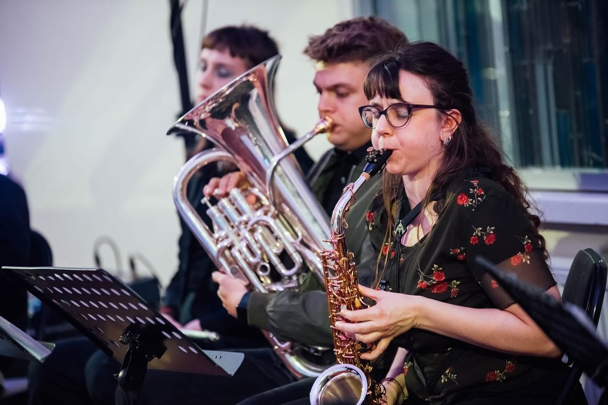
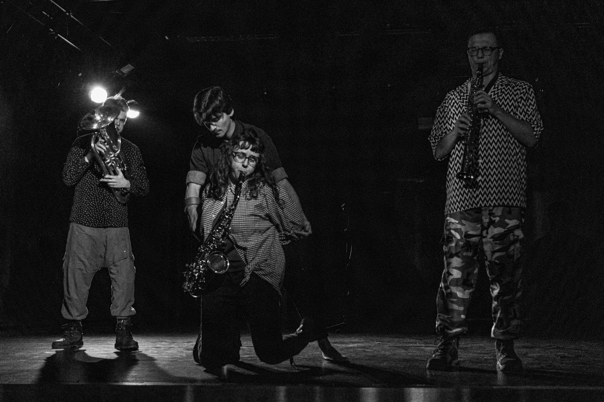
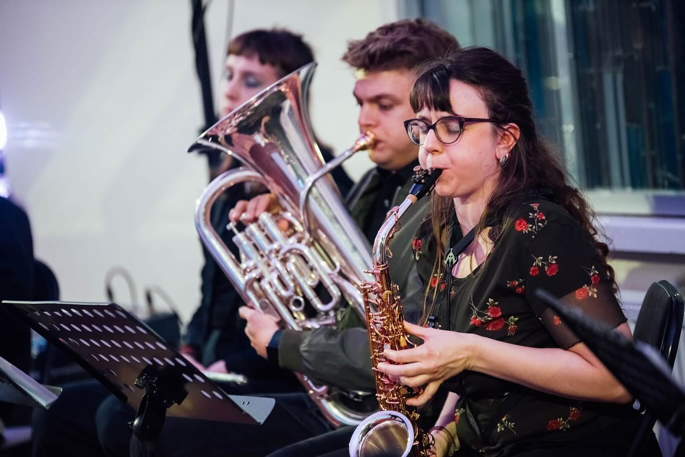
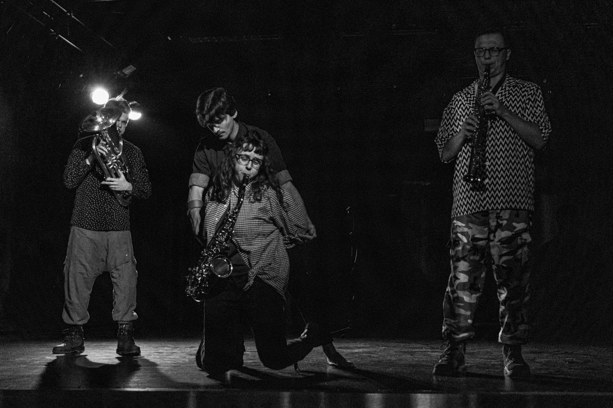

Francesca Fantini is a saxophonist and artistic researcher whose work moves fluidly between contemporary music and free improvisation. She is currently pursuing a PhD at Roma Tre University investigating how the body functions as both instrument and site of knowledge in free improvisational settings, challenging conventional hierarchies of musical form and authorship. Her artistic research and mission is to revitalise free improvisation practice and performance within the European Contemporary Environment. She is artist in residence at Intro in Situ, in the Dutch city of Maastricht, for the year 2026, where she is developing her project "Bodies of sounds, bodies of thoughts".
Francesca’s milestones as performers include participations at Derby Elettrico Improvisation Orchestra, at Monheim Triennale II, with signature artist Selendis Sebastian Alexander Johnson, at EUYWO 2019. She has performed extensively across Europe in concert halls, festivals, and experimental spaces, including Muziekgebouw Eindhoven, Saarbrücken Radio Hall, Intro in Situ, Muzikos Ruduo Festivalis, ContemPLAY Festivalis, Kintai Music Festival.
She is a member of several projects, including the contemporary improvisation trio airkeychains, the European Music Collective, and Duo Taíta with pianist Yi-Ling Wu.
As Artistic Researcher she gave presentations of her work about intersections between Contemporary Chamber Music and Free Improvisation in Ensemble for “Oi Dialogoi” congresses, organized by the Conservatory of Trento, and for the First International Doctoral Symposium of Siena Jazz.
As an educator, she gave masterclasses and workshops in Higher Education Institutions like Conservatory of Brescia, National Academy of Dance of Rome.
She is actively advocating for equal gender representation in music with the project "Che genere di musica ascolti? - What gender of music do you listen to?" in collaboration with Martina Madini (saxophonist) and Elisa Belotti (journalist).
In 2024, she was recognized as Artist of the Month by Giovani Artisti Italiani. She is awardee of the 2026 grant for Levi Campus. Since February 2026 she has been artist in residence at Intro in Situ, Maastricht, where she is developing her project “Bodies of Sound”.
Francesca earned her Bachelor’s degree in Classical Saxophone from Conservatorium Maastricht in 2021. In 2024, she completed a Master’s degree in Chamber Music at the Conservatory of Brescia with highest honors. During her Master’s Programme, she further expanded her artistic language at the Lithuanian Academy of Music and Theatre in Vilnius, where she focused on free improvisation and contemporary chamber music, developing an approach that bridges rigorous technique with exploratory sonic research.


 


